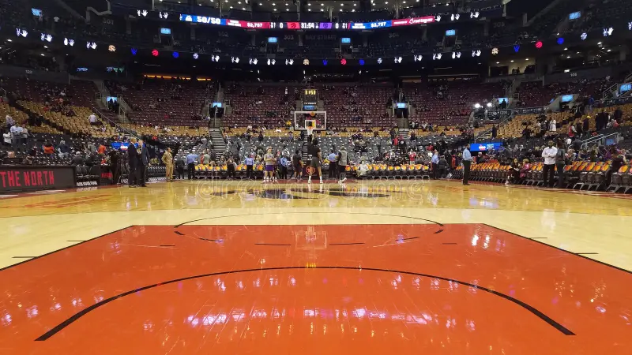

League Buzz

Several teams have been looking for trades ahead of the deadline. Rumors have sparked up on multiple Players of all-star level that could shake the league up greatly.
Potential Blockbuster Deals
Many teams are said to be targeting Giannis Antetokounpo. Despite that possibly large trade, there are also teams like the Cavaliers who are looking to possibly acquire LeBron James again or trade Darius Garland for James Harden
There is another possible trade for Anthony Davis from the Dallas Mavericks to the Washington Wizards. Another rumor surrounds the Golden State Warriors and a trade that would move Porziņģis to the Warriors for Kuminga.